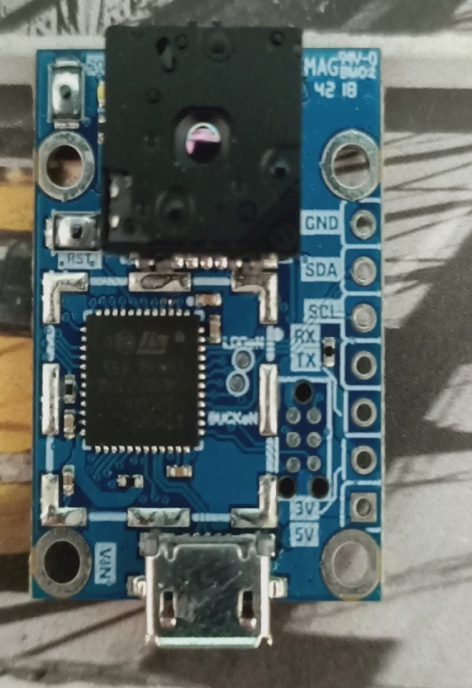
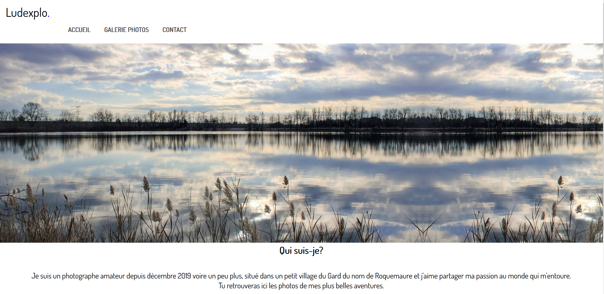

Mes projets
caméra thermique:
site vitrine:
Ma formation:
2015-2016
-Première Bac pro Sen
-Obtention du BEP au lycée Saint-Jean Baptiste de la salle à Avignon
-Stage Azimut informatique à Bagnols-sur-Cèze
2017-2018
- Terminal Bac pro SEN ASI (Alarme sécurité incendie)
-Obtention du baccalauréat au lycée Saint-Jean Baptiste de la salle à Avignon
-Stage Roquemaure Service
2019-2021
-Stage sos Backup à Bezouce
-Obtention du Bts SNIR
Language de programmation déjà utilisé
- C
- C++
- Arduino
- Bash
- Java
- Shell